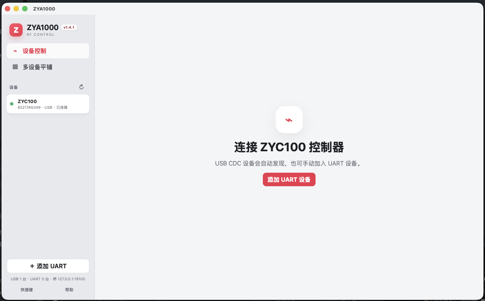
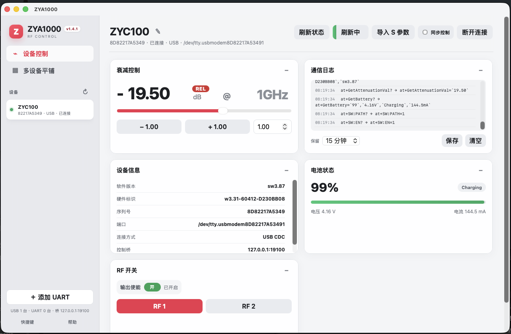
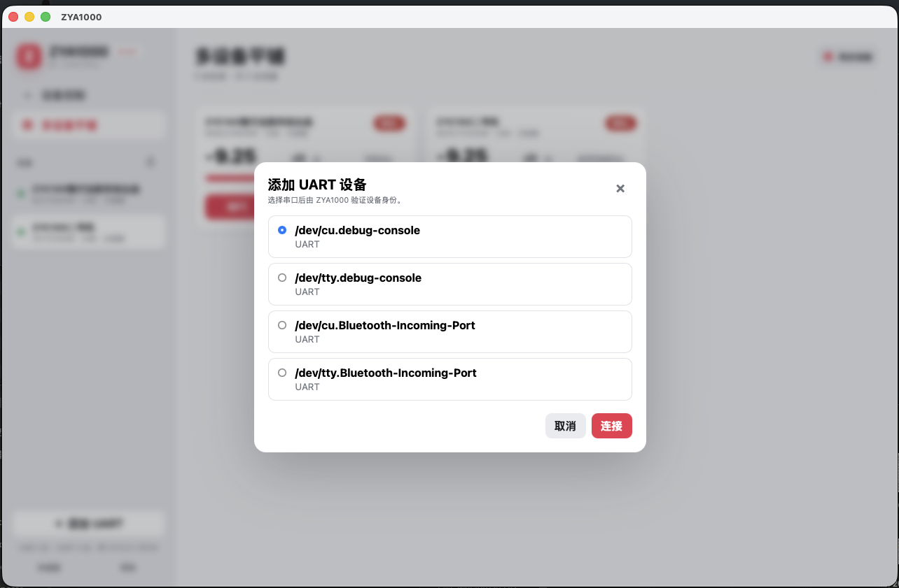
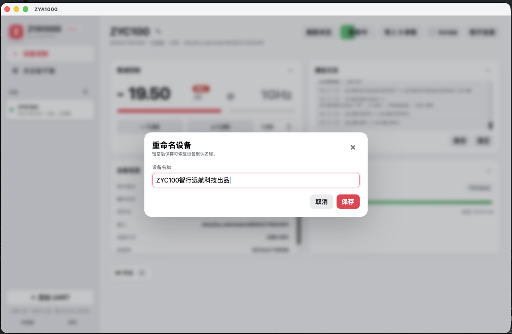
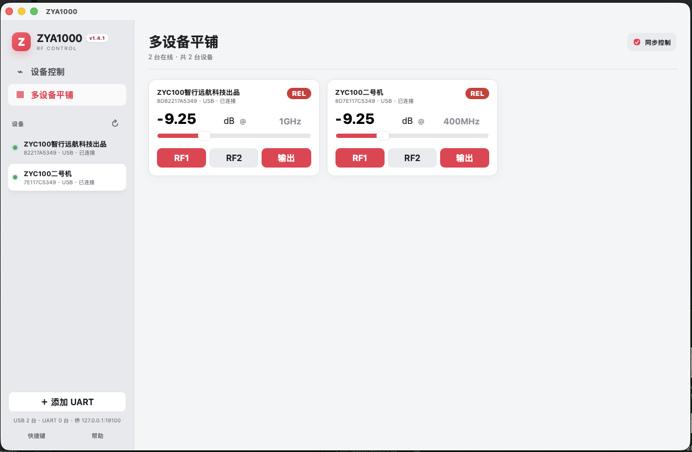
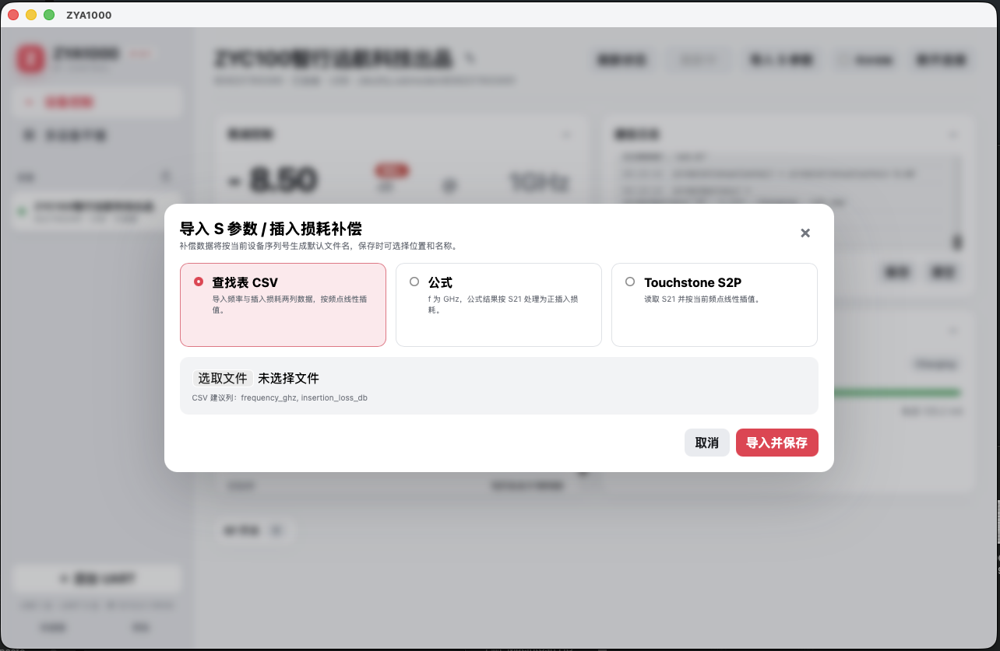
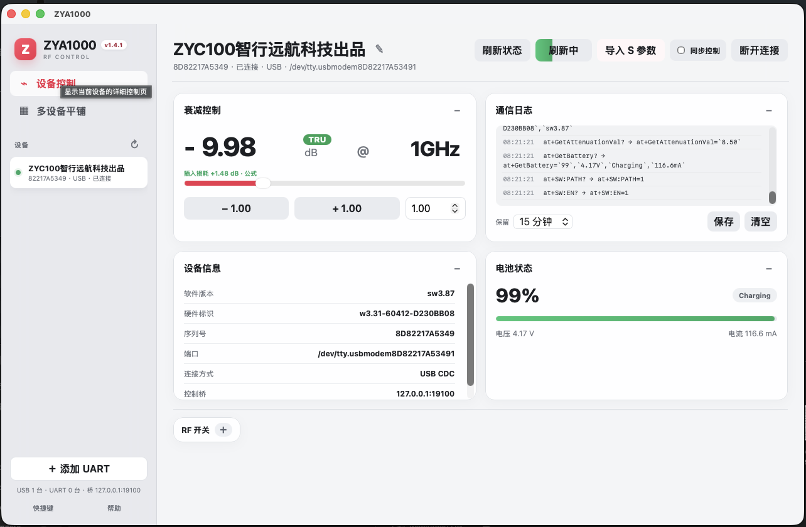
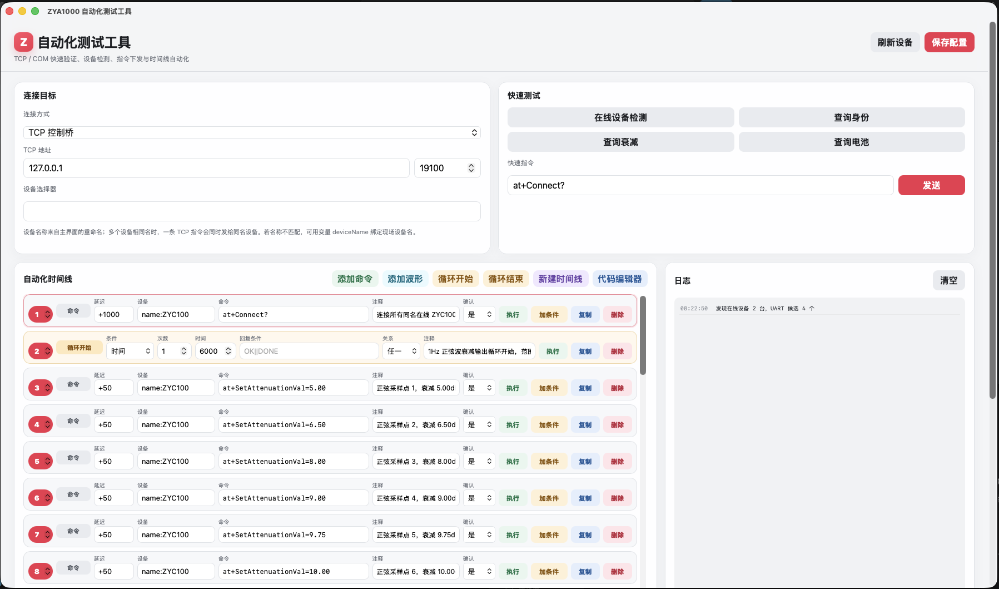
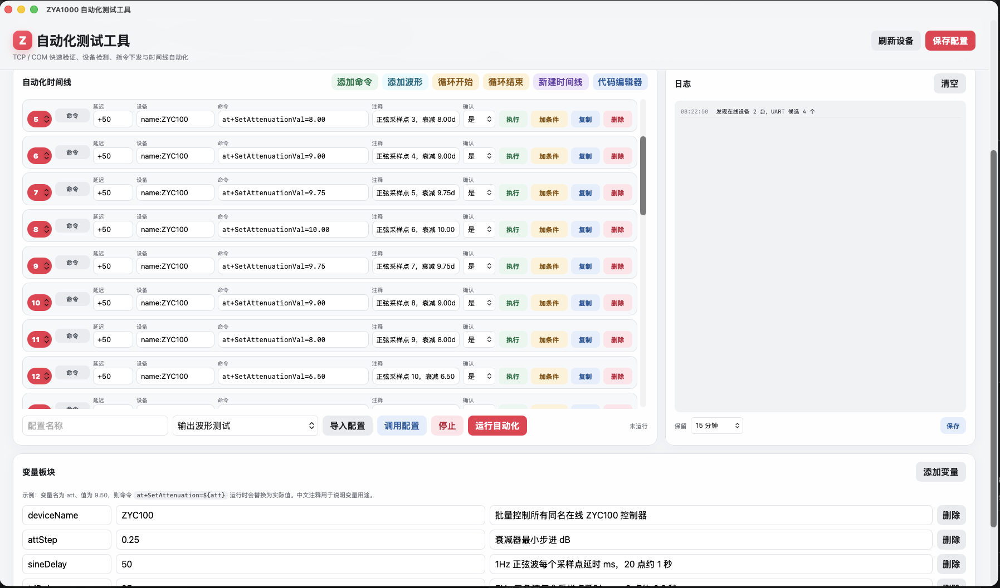
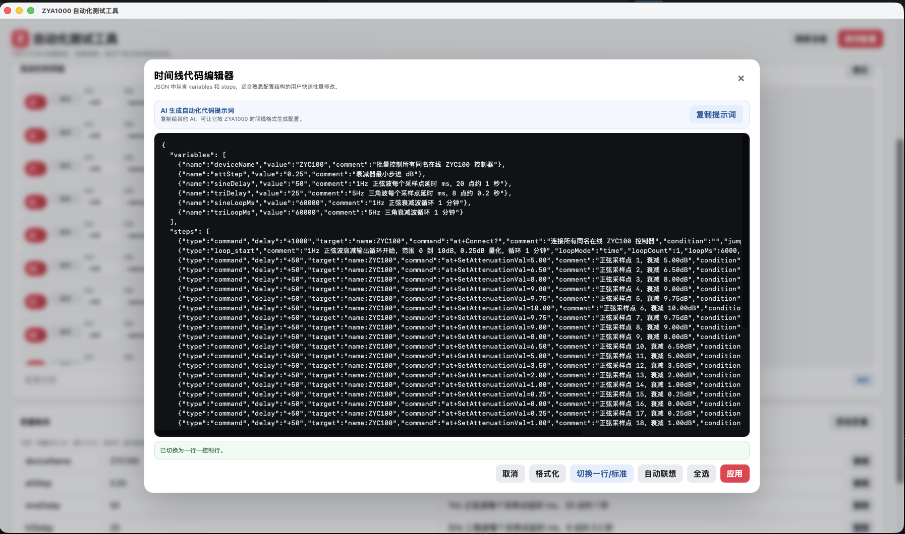

1. 产品概述
ZYA1000 是用于 ZYC100 控制器 的桌面上位机软件，配合 ZYE660 衰减模块可完成日常衰减控制、批量设备管理、插入损耗补偿和自动化测试。软件基于 Rust + Tauri 构建，支持 macOS 和 Windows，通过 USB CDC 或 UART 串口与设备通信。
1.1 核心功能一览
| 功能模块 | 说明 |
|---|---|
| 设备自动发现 | 自动扫描并连接 VID 0x0483 / PID 0x5740 的 USB CDC 设备 |
| 手动 UART | 支持手动选择串口，固定 115200 波特率，UART 默认禁用 RF 开关 |
| 衰减控制 | 范围 0.00–31.75 dB，0.25 dB 步进量化，支持滑条/滚轮/直接输入 |
| RF 控制 | RF1/RF2 通道切换、输出使能开关、同步控制 |
| 多设备管理 | 平铺视图、设备别名、右键操作、拖动排序、批量删除 |
| 插入损耗补偿 | 支持 CSV 查找表、多项式公式、Touchstone S2P 文件导入，REL/TRU 模式切换 |
| 通信日志 | 带时间戳的完整通信记录，自动覆盖、本地保存 |
| 外部控制桥 | TCP 127.0.0.1:19100，支持 AT 指令透传和 JSONL 协议 |
| 自动化测试 | 独立窗口，时间线流程、循环、变量、高速扫描、多配置管理 |

1.2 系统要求
| 平台 | 要求 |
|---|---|
| macOS | macOS 11 (Big Sur) 及以上，Apple Silicon 或 Intel 处理器 |
| Windows | Windows 10/11 x64，需安装 WebView2 Runtime（通常系统已内置） |
| USB 驱动 | macOS 免驱；Windows 需安装 STM32 Virtual COM Port 驱动 |
2. 安装与启动
安装完成后，建议先完成一次“启动软件 - 连接设备 - 查询身份 - 设置衰减”的基础流程。确认基础通信正常后，再使用补偿、同步控制和自动化测试功能。
2.1 macOS 安装
- 从发布页面下载
ZYA1000.dmg磁盘映像文件。 - 双击打开 DMG，将 ZYA1000 图标拖入 Applications 文件夹。
- 首次打开时，若系统提示"无法验证开发者"，请前往 系统设置 → 隐私与安全性，点击"仍要打开"。
- 启动后，macOS 菜单栏将显示完整的"设备 / 视图 / 工具 / 帮助"菜单。
2.2 Windows 安装
- 下载
ZYA1000_Setup.exe安装程序或可携式ZYA1000.zip。 - 运行安装程序，按照向导完成安装。
- 如果使用可携式版本，解压后直接运行
ZYA1000.exe即可。 - 首次运行前确保 ZYC100 设备已通过 USB 连接，且驱动已正确安装。
3. 主界面概览
ZYA1000 主界面采用双栏布局：左侧用于选择视图和管理设备，右侧显示当前设备的控制卡片。初次使用时，只需要关注左侧设备列表和右侧衰减控制卡片即可。

界面主要区域说明：
- 品牌区：左上角显示 ZYA1000 标识和版本号。
- 视图切换："设备控制"显示当前选中设备的详细控制页；"多设备平铺"以卡片形式展示全部在线设备。
- 设备列表：列出所有已连接和离线设备，绿色圆点表示在线，灰色表示离线。点击切换设备。
- 底部操作：可手动添加 UART 设备，查看扫描状态，进入快捷键和帮助页面。
- 主内容区：显示当前设备的衰减控制、电池、RF 开关、设备信息和通信日志等卡片。卡片可拖动标题栏交换位置，也可折叠。
4. 设备连接
4.1 USB 自动发现
ZYA1000 启动后自动扫描 VID 0x0483 / PID 0x5740 的 USB CDC 设备。检测到 ZYC100 设备后会自动加入设备列表，无需手动操作。
侧边栏底部显示扫描状态，点击刷新按钮 ↻ 可手动触发重新扫描。
4.2 手动添加 UART 设备
- 点击侧边栏底部的 ＋ 添加 UART 按钮。
- 在弹出的对话框中选择对应的串口（macOS 下如
/dev/tty.usbmodem*，Windows 下如COM3）。 - 点击 连接，ZYA1000 将自动验证设备身份。

4.3 连接与断开
在设备列表中右键点击设备名称，选择"连接 / 断开"可在连接状态间切换。也可通过快捷键（macOS: ⌘D，Windows: Ctrl+D）快速操作。
4.4 设备别名
右键设备选择"重命名"，或点击设备标题旁的铅笔图标 ✏️，可为设备设置别名。别名保存在本地，便于多设备场景下区分。留空保存可恢复默认名称。

5. 衰减控制
5.1 基本操作
衰减控制卡片是最常用的区域。目标值可以快速拖动，也可以精确输入。所有方式最终都会按设备支持的 0.25 dB 步进量化。
- 滑条拖动：拖动滑块快速调整衰减值，实时生效。
- 滚轮调节：鼠标悬停在衰减数值上，使用滚轮以当前步进值增减。
- 直接输入：点击衰减数值进入编辑模式，输入目标值后按回车确认。
- 步进按钮：点击 − / + 按钮按当前步进值增减衰减。
衰减范围 0.00 – 31.75 dB，所有输入自动按 0.25 dB 量化取整。
5.2 步进值设置
步进值默认为 0.25 dB，可在步进输入框中修改。有效范围 0.25 – 31.75 dB，修改后自动量化。此设置会通过快捷键同步影响衰减增减操作。
5.3 REL / TRU 模式
衰减控制支持两种工作模式：
| 模式 | 标识 | 说明 |
|---|---|---|
| REL（相对衰减） | REL | 直接设置衰减器的衰减值，不附加任何补偿。 |
| TRU（真实衰减） | TRU | 在主衰减值基础上加入设备插入损耗补偿，使实际输出达到目标真值。需要先导入补偿数据。 |
点击 REL/TRU 标签可在两种模式间切换。切换到 TRU 模式时会弹出确认框，显示当前补偿数据来源和补偿值。
@ X.XXX GHz，表示当前用于补偿计算的频率点。TRU 模式下，频率值影响插入损耗补偿的计算结果。
6. RF 开关与输出使能
6.1 通道选择
RF 开关卡片提供 RF1 和 RF2 两个通道按钮。当前选中通道高亮显示为红色。切换通道时，新通道即刻生效。
快捷键：macOS ⌘1/⌘2，Windows Ctrl+1/Ctrl+2。
6.2 输出使能
输出使能开关控制 RF 信号的输出状态：
- 开启（绿色）：RF 信号正常输出。
- 关闭（灰色）：RF 输出被禁用。
快捷键：macOS ⌘E，Windows Ctrl+E。
6.3 同步控制
开启同步控制后，衰减和 RF 操作会同步应用到所有在线设备。此功能适用于需要多设备保持一致状态的场景。
快捷键：macOS ⌘⇧S，Windows Ctrl+Shift+S。
7. 电池与设备信息
7.1 电池状态
电池卡片显示当前连接设备或模块返回的电池信息。请注意：ZYC100 控制器本体不含电池；如果界面显示电池状态，通常来自支持电池查询的设备或模块，例如 ZYE660 离线版（升级版）。
电池卡片通常显示：
- 电量百分比：大号数字显示剩余电量。
- 电池条：可视化电量进度条，绿色渐变填充。
- 电压值：当前电池电压（V）。
- 充电状态：充电中 / 已充满 / 放电中。
7.2 设备信息
设备信息卡片展示当前连接设备的详细参数：
- 硬件版本、固件版本
- 设备序列号
- 连接方式（USB / UART）
- 端口名称
8. 多设备管理
8.1 多设备平铺视图
点击侧边栏的 ▦ 多设备平铺 切换到平铺视图。所有在线设备以卡片形式排列（每行最多 3 列），每张卡片独立显示衰减值、RF 通道和输出状态。

平铺模式下支持：
- 独立调节每个设备的衰减值（直接输入或滚轮）
- 每个设备独立切换 REL/TRU 模式和频率设定
- RF 通道和输出使能快速切换
快捷键：macOS ⌘T，Windows Ctrl+T。
8.2 设备管理
右键点击设备列表中的设备，弹出上下文菜单：
- 重命名：设置设备别名
- 连接 / 断开：切换连接状态
- 向上移动 / 向下移动：调整设备在列表中的顺序
- 添加 UART…：手动添加串口设备
- 设备管理…：打开设备管理对话框，可批量选择并删除已断开/离线设备（在线设备不可删除）
8.3 拖动排序
在设备列表中直接拖动设备项可调整顺序。排序结果会自动保存。
9. 插入损耗补偿
插入损耗补偿用于把线缆、转接头、测试夹具等额外损耗计入控制结果。启用补偿后，用户设置的是目标真实衰减值，软件会计算需要下发给设备的控制衰减值。
9.1 导入补偿数据
- 在衰减控制卡片中，点击 REL/TRU 标签旁的区域，打开补偿导入对话框。
- 选择补偿数据类型：
| 类型 | 说明 |
|---|---|
| 查找表 CSV | 导入两列 CSV 文件（频率 GHz, 插入损耗 dB），按频点线性插值。适合从矢量网络分析仪导出的离散数据。 |
| 公式 | 输入多项式公式，如 S_{21}=-1.17217-0.30125f-0.01049f^2，其中 f 为频率（GHz），结果作为 S21 插入损耗。 |
| Touchstone S2P | 导入标准 Touchstone S2P 文件，自动提取 S21 参数并按频率线性插值。支持 DB、MA 和 RI 格式。 |

9.2 切换到 TRU 模式
导入补偿数据后，点击 REL 标签切换到 TRU 模式。系统弹出确认框，显示：
- 数据来源（CSV / S2P / 公式）
- 配置文件路径
- 当前频率
- 补偿值
确认后，主衰减显示将切换为 TRU 模式（绿色标识），设备通过双参数 AT 指令同步控制衰减值和真实值。

10. 通信日志
10.1 日志查看
通信日志用于排查连接和控制问题。每次点击按钮、修改衰减或自动刷新设备状态时，软件都会记录对应的 AT 指令和设备回复。
- 发送指令：以
>前缀显示 - 接收回复：以
<前缀显示 - 每条日志附带本地时间戳
- 自动滚动到最新记录
10.2 日志保留设置
日志保留时长可设置为 5分钟 / 15分钟 / 1小时 / 24小时，超过设定时长的日志自动清理。适合长时间运行场景下控制内存使用。
10.3 保存日志
点击日志卡片底部的 保存 按钮，通过系统另存为对话框选择保存位置和文件名。默认目录为 Documents/ZYA1000/logs。
10.4 自动刷新
每个设备可独立配置自动刷新开关和刷新间隔。开启后，ZYA1000 按设定间隔自动查询设备状态（电池等），更新界面显示。关闭后不再后台查询，减少串口通信负载。
11. 外部控制桥 (TCP Bridge)
ZYA1000 启动后自动在本机开启 TCP 控制桥服务，监听 127.0.0.1:19100。第三方程序（如 LabVIEW、Python 脚本、自动化测试框架）可通过此端口控制 ZYC100 设备。
11.1 AT 指令透传
直接发送公开 AT 指令行，未指定设备时默认使用第一台在线设备：
at+Connect?
at+SetAttenuationVal=`10.25`
at+GetBattery?11.2 多设备寻址
支持多种设备选择器语法，精确指定目标设备：
# ZYA1000 内部 key
zya:dev=SERIAL;at+GetBattery?
# 指定端口名
zya:send=usb:SERIAL;at+SetAttenuationVal=`10.25`
# SCPI 风格
ZYA1000::SERIAL::INSTR at+Connect?
# 短后缀（不冲突时可用）
ZY:SERIAL at+GetAttenuationVal?11.3 JSONL 协议
每行一个 JSON 请求，支持结构化交互：
{"cmd":"hello"}
{"cmd":"list"}
{"cmd":"send","at":"at+Connect?"}
{"cmd":"send","device":"SERIAL","at":"at+SetAttenuationVal=`10.25`"}| 命令 | 说明 |
|---|---|
hello | 握手/连通性检测，返回版本信息 |
list | 列出所有在线设备及其信息 |
status | 查询指定设备状态 |
send | 向指定设备发送 AT 指令 |
12. 自动化测试工具
菜单 工具 → 自动化测试工具… 打开独立窗口。这个工具适合做快速连通性验证、重复测试流程、产线前置检查，以及需要精确时间间隔的衰减扫描。

12.1 连接方式
- TCP 控制桥：通过 ZYA1000 内置桥接服务（127.0.0.1:19100）通信，支持多设备寻址。
- COM / 串口：直接连接物理串口，适合验证单台设备协议，固定 115200 波特率。
12.2 快速测试
提供一键测试按钮：
- 在线设备检测：通过控制桥列出当前在线设备。
- 查询身份：发送
at+Connect?获取设备信息。 - 查询衰减：读取当前衰减值。
- 查询电池：读取电池状态。
也可在快速指令框中手动输入任意 AT 指令并发送。
12.3 自动化时间线
时间线按行组织测试步骤，支持以下行类型：

| 行类型 | 说明 |
|---|---|
| 命令 (Command) | 发送 AT 指令，可配置延迟（正数=发送后等待，负数=发送前等待）、设备选择器、条件和确认模式。 |
| 波形 (Waveform) | 高精度衰减扫描/波形输出，按绝对时间轴执行采样点，支持同名多设备并行、dryRun 频率估算。 |
| 循环开始 (Loop Start) | 定义循环条件：按次数、按持续时间或按指定回复结束。支持嵌套。 |
| 循环结束 (Loop End) | 标记循环范围结束。 |
12.4 条件判断
命令可附加条件判断：根据设备回复内容决定是继续执行下一条还是跳转到指定行。条件支持：
- 包含 / 正则匹配 / 取反
&&和||多条件组合
12.5 变量
变量板块可定义变量名、变量值和中文注释。在命令中通过 ${变量名} 或 {{变量名}} 引用，运行时自动替换为实际值。
12.6 配置管理
- 保存配置：将当前连接方式、变量和时间线一起保存，默认目录
Documents/ZYA1000/configs。 - 调用配置：从下拉框选择已保存的配置快速切换测试流程。
- 导入配置：导入 JSON 配置文件。
- 代码编辑器：以 JSON 格式直接编辑变量和时间线，支持格式化、紧凑格式切换和 AI 提示词复制。

12.7 高速衰减扫描 (Waveform)
波形行专为高速衰减扫描设计：
- 采用
performance.now()绝对时间轴调度 - 按
start + n * intervalMs计算采样点 - 自动扣除通信耗时，减少时序抖动
- 支持同名多设备在同一采样点并行发送
- dryRun 模式可估算理论频率
- 执行后输出时序统计：平均间隔、抖动、deadline miss、实际频率
13. 快捷键设置
ZYA1000 支持自定义键盘快捷键，提高操作效率。
13.1 打开快捷键设置
点击侧边栏底部的 快捷键 按钮，或通过菜单 视图 → 快捷键… 打开设置对话框。
13.2 默认快捷键
| 功能 | macOS | Windows |
|---|---|---|
| 衰减增加 | ⌘↑ | Ctrl+↑ |
| 衰减减少 | ⌘↓ | Ctrl+↓ |
| 刷新设备 | ⌘R | Ctrl+R |
| 连接/断开 | ⌘D | Ctrl+D |
| 同步控制 | ⌘⇧S | Ctrl+Shift+S |
| 多设备平铺 | ⌘T | Ctrl+T |
| 选择 RF1 | ⌘1 | Ctrl+1 |
| 选择 RF2 | ⌘2 | Ctrl+2 |
| 输出使能 | ⌘E | Ctrl+E |
13.3 自定义快捷键
在快捷键对话框中点击任意快捷键框，然后直接按下目标组合键即可重新绑定。点击 恢复默认 可重置所有快捷键。
14. 常见问题与排错
14.1 设备未被识别
- 检查 USB 线缆是否正常连接，ZYC100 设备是否已上电。
- Windows 用户请确认已安装 STM32 Virtual COM Port 驱动。
- macOS 用户请检查 系统信息 → USB 中是否能看到 STM32 设备。
- 尝试点击侧边栏的刷新按钮 ↻ 手动扫描。
- 如果 USB 始终无法识别，尝试通过 添加 UART 手动连接。
14.2 衰减值无法设置
- 确认设备处于在线状态（设备名前绿色圆点）。
- 确认输入值在 0.00–31.75 dB 范围内。
- 检查通信日志中是否有错误回包。
- UART 模式下部分 RF 功能受限，建议切换到 USB CDC 连接。
14.3 补偿数据不生效
- 确认已成功导入补偿数据（CSV/S2P/公式）。
- 确认已切换到 TRU 模式（标识为绿色）。
- 检查频率值是否在补偿数据的有效范围内。
- CSV 文件确认格式为"频率(GHz), 插入损耗(dB)"两列。
14.4 外部控制桥连接失败
- 确认 ZYA1000 正在运行，且至少有一台设备在线。
- 确认连接地址为
127.0.0.1:19100。 - 检查防火墙是否拦截了本地回环通信。
- 对于高风险维护指令，控制桥会主动拒绝，请使用公开 AT 指令。
14.5 自动化测试工具无响应
- 确认连接方式与设备选择器配置正确。
- TCP 模式下确认主程序正在运行且设备在线。
- COM 模式下确认串口号和波特率（115200）正确。
- 点击 刷新设备 按钮重新读取在线设备列表。
15. AT 指令参考
以下是 ZYC100 设备支持的公开 AT 指令列表，可通过 ZYA1000 界面或外部控制桥发送。
15.1 查询类指令
| 指令 | 说明 | 回复示例 |
|---|---|---|
at+Connect? | 查询设备身份信息 | +CONNECT:ZYC100,V3.87,SN:0001 |
at+GetAttenuationVal? | 查询当前衰减值 | +ATTENUATION:10.25 |
at+GetBattery? | 查询电池状态 | +BATTERY:85,4.10,1 |
at+SW:PATH? | 查询当前 RF 通道 | +SW:PATH:1 |
at+SW:EN? | 查询输出使能状态 | +SW:EN:1 |
15.2 设置类指令
| 指令 | 说明 |
|---|---|
at+SetAttenuationVal=`10.25` | 设置衰减值为 10.25 dB（REL 模式） |
at+SetTrueAttenuationVal=10.25,11.42 | 设置真实衰减值为 10.25 dB，补偿值 11.42 dB（TRU 模式） |
at+SW:PATH=1 | 切换到 RF1 通道 |
at+SW:PATH=2 | 切换到 RF2 通道 |
at+SW:EN=1 | 开启 RF 输出 |
at+SW:EN=0 | 关闭 RF 输出 |
- 电池回复格式：
+BATTERY:电量百分比,电压(V),充电状态（充电状态：0=放电, 1=充电中, 2=已充满） - 衰减值始终按 0.25 dB 量化，超出范围的值会被自动截断。
- TRU 模式下，设备内部会自动计算并应用补偿后的衰减值。